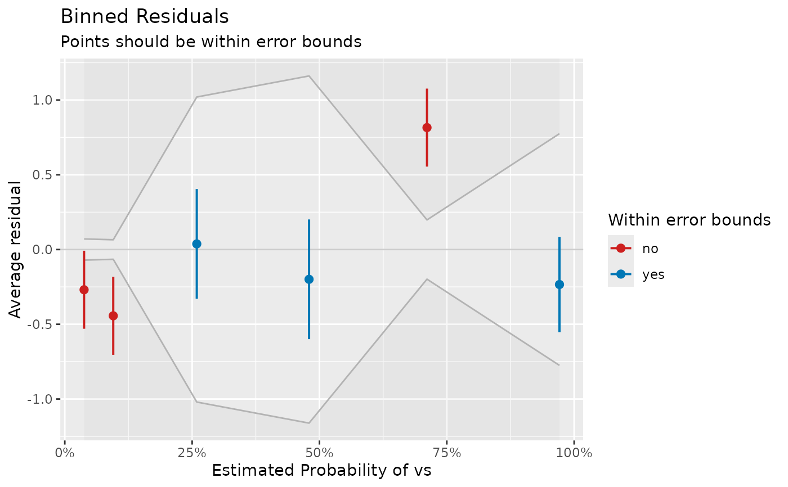

Check model quality of binomial logistic regression models.
Arguments
- model
A
glm-object with binomial-family.- term
Name of independent variable from
x. If notNULL, average residuals for the categories oftermare plotted; else, average residuals for the estimated probabilities of the response are plotted.- n_bins
Numeric, the number of bins to divide the data. If
n_bins = NULL, the square root of the number of observations is taken.- ...
Currently not used.
Value
A data frame representing the data that is mapped in the accompanying plot. In case all residuals are inside the error bounds, points are black. If some of the residuals are outside the error bounds (indicated by the grey-shaded area), blue points indicate residuals that are OK, while red points indicate model under- or over-fitting for the relevant range of estimated probabilities.
Details
Binned residual plots are achieved by “dividing the data into
categories (bins) based on their fitted values, and then plotting
the average residual versus the average fitted value for each bin.”
(Gelman, Hill 2007: 97). If the model were true, one would
expect about 95% of the residuals to fall inside the error bounds.
If term is not NULL, one can compare the residuals in
relation to a specific model predictor. This may be helpful to check if a
term would fit better when transformed, e.g. a rising and falling pattern
of residuals along the x-axis is a signal to consider taking the logarithm
of the predictor (cf. Gelman and Hill 2007, pp. 97-98).
Note
binned_residuals() returns a data frame, however, the print()
method only returns a short summary of the result. The data frame itself
is used for plotting. The plot() method, in turn, creates a ggplot-object.
References
Gelman, A., and Hill, J. (2007). Data analysis using regression and multilevel/hierarchical models. Cambridge; New York: Cambridge University Press.
Examples
model <- glm(vs ~ wt + mpg, data = mtcars, family = "binomial")
result <- binned_residuals(model)
result
#> Warning: Probably bad model fit. Only about 50% of the residuals are inside the error bounds.
# look at the data frame
as.data.frame(result)
#> xbar ybar n x.lo x.hi se ci_range
#> 1 0.03786483 -0.03786483 5 0.01744776 0.06917366 0.01899089 0.00968941
#> 2 0.09514191 -0.09514191 5 0.07087498 0.15160143 0.02816391 0.01436960
#> 3 0.25910531 0.07422802 6 0.17159955 0.35374001 0.42499664 0.21683901
#> 4 0.47954643 -0.07954643 5 0.38363314 0.54063600 0.49728294 0.25372045
#> 5 0.71108931 0.28891069 5 0.57299903 0.89141359 0.10975381 0.05599787
#> 6 0.97119262 -0.13785929 6 0.91147360 0.99815623 0.30361062 0.15490623
#> CI_low CI_high group
#> 1 -0.05685572 -0.01887394 no
#> 2 -0.12330581 -0.06697800 no
#> 3 -0.35076862 0.49922466 yes
#> 4 -0.57682937 0.41773650 yes
#> 5 0.17915688 0.39866451 no
#> 6 -0.44146992 0.16575133 yes
# plot
if (require("see") && getRversion() >= "3.6.0") {
plot(result)
}
#> Loading required package: see
#> Warning: Computation failed in `stat_smooth()`:
#> A term has fewer unique covariate combinations than specified maximum degrees of freedom
